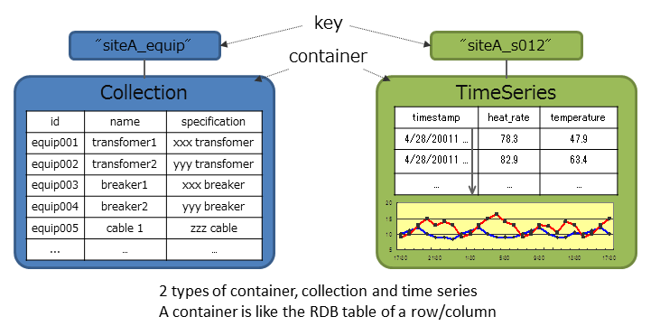

Table of Contents
3.2 Key Container Model¶
GridDB data adopts a Key-Container data model that is expanded from a Key-Value model. Data is stored in a “container”, which acts similarly to a RDB table. In fact, a container can be considered a RDB table for easier understanding and to help conceptualizing. When accessing data in GridDB, the model allows data to be short-listed with a key thanks to its Key-Value database structure, allowing processing to be carried out at the highest speed. A design that prepares a container serving as a key is required to support the entity under management.
3.2.1 Collection Container¶
A type of container storing and managing ROWS. A ROW can have a key, but a key is not mandatory. A key can be assigned to a single string or integer (INTEGER or LONG type only), or time-type data. The data housed in this container is typically thought of as more ‘traditional’ (ie. STRING, BOOLEAN, ARRAY, etc). An example of both calling the data and how it is viewed can be seen below
List.1 Data retrieving process (WeatherStationLogic.java)
package sample;
import com.toshiba.mwcloud.gs.Collection; import com.toshiba.mwcloud.gs.GSException; import com.toshiba.mwcloud.gs.GridStore;
import sample.logic.GridDBLogic; import sample.logic.WeatherStationLogic; import sample.row.WeatherStation;
public class CollectionDeleteRow {
public static void main(String\[\] args) throws GSException {
GridStore store = null;
try {
WeatherStationLogic wsLogic = new WeatherStationLogic();
// Create Connection
store = wsLogic.createGridStore();
// Get Collection
Collection weatherStationCol =
store.getCollection("weather_station", WeatherStation.class);
List.2 Call data retrieving operation(CollectionRetrieve.java)
try { System.out.println(“ID \tName \t \t \tLongitude \tLatitude \tCamera”); for (int i=0; i < WeatherStationLogic.JP_PREFECTURE; i ++) { // Retrieve row by key WeatherStation weatherStation=weatherStationCol.get (String.valueOf (i + 1)); System.out.println (String.format(“% - 3s \t% -20s \t% -10s \t% -10s \t% -5s”, weatherStation.id, weatherStation.name, weatherStation.latitude, weatherStation.longitude, weatherStation.hasCamera)); } } Finally { // Close Connection weatherStationCol.close (); }
Execution results are as follows.
List.3 data acquisition result
ID Name Longitude Latitude Camera 1 Hokkaido-Sapporo 43.06417 141.34694 true 2 Aomori-Aomori 40.82444 140.74 false 3 Iwate-Morioka 39.70361 141.1525 true 4 Miyagi-Sendai 38.26889 140.87194 false 5 Akita-Akita 39.71861 140.1025 true (Snip)

3.2.2 TimeSeries Container¶
A type of container storing and managing ROWS with a time-type key, provided with a special function to operate TimeSeries data. A key corresponds to the time of a TimeSeries row. Suitable for handling large volumes of TimeSeries data that is generated by sensors. Other values paired with the time of occurrence, space data (such as position information, etc.) can also be registered and space specific operations (space intersection) can also be carried out in a container. A variety of data can be handled as the system supports non-standard data such as array data, BLOB and other data as well. A unique compression function and a function to release data that has expired and so on are provided in a TimeSeries container, making it suitable for the management of data which is generated in large volumes.
A small example of calling a TimeSeries container and viewing the information can be seen below
List.1 process of acquiring the specified time (TimeSeriesRetrieve.java)
// Specify Time InstrumentLog log=logTs.get (format.parse(“2016/07/02 12:00”)); System.out.println(“get by Time”); System.out.println (String.format(“% s \ t% -20s \ t% -10s”, log.timestamp, log.weatherStationId, log.temperture));
Execution results are as follows.
List.2 specified time of acquisition results
get by Time Sat Jul 02 12:00:00 EDT 2016 weather_station_1 80.0